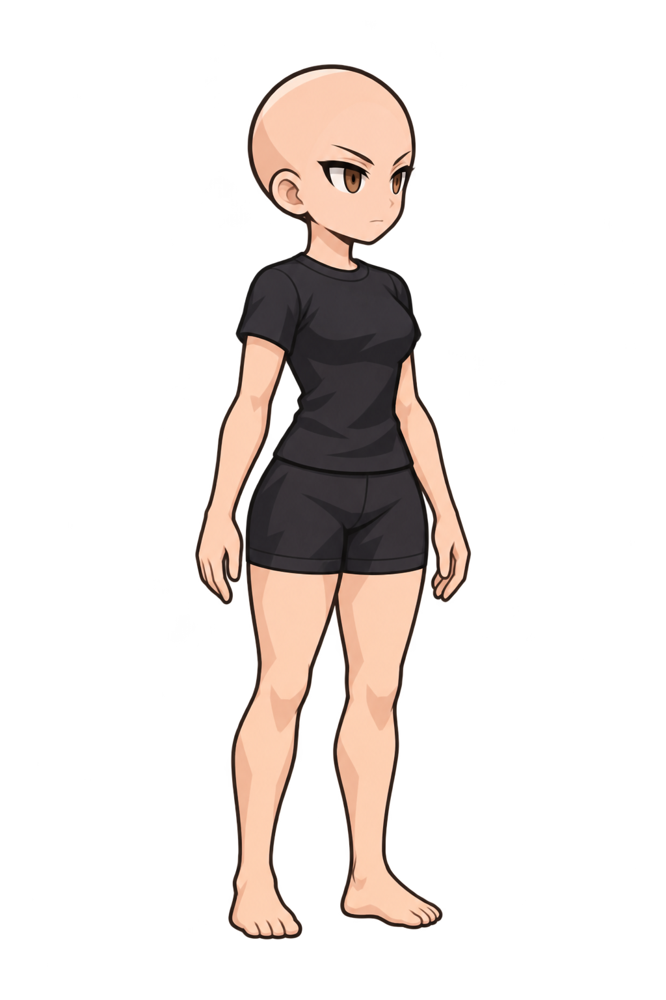
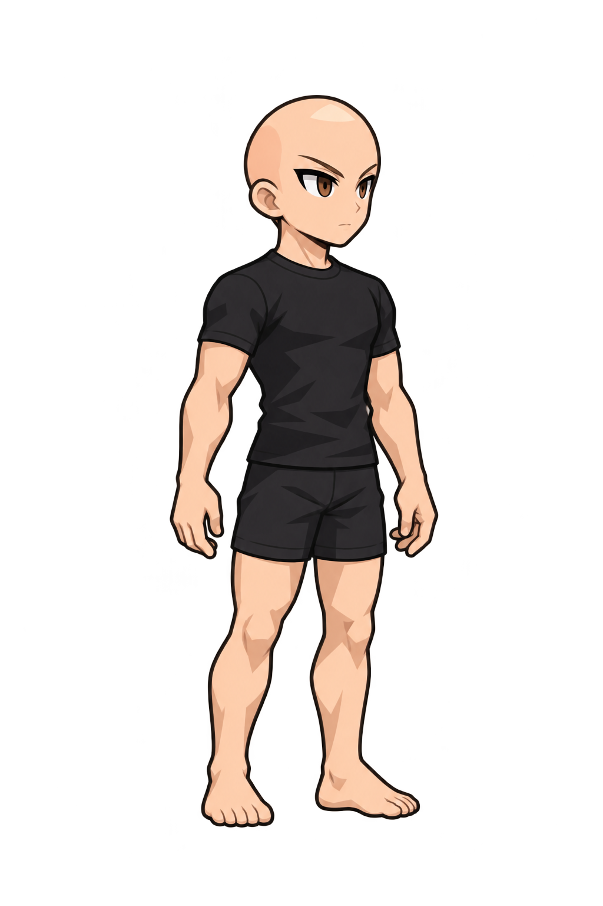
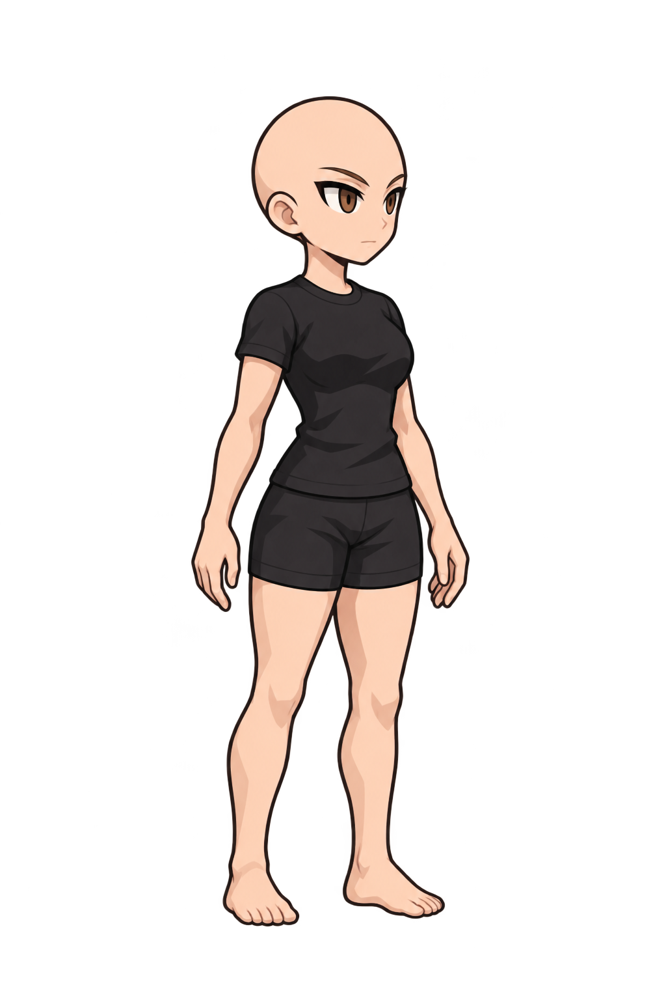
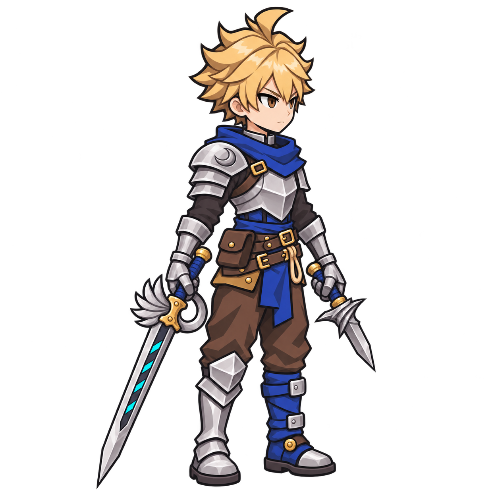

밝은 배경
어두운 배경
행: 생성 경로 / 열: 남성·여성 · 본체 키/발선 등비 등록 · 클릭 시 원본 확대
내장 · 남성
A-male.png · native 1024×1536 · 원본 바이트 보존
내장 · 여성
A-female.png · native 1024×1536 · 원본 바이트 보존

GPT Image2.6 요청 · 남성
B-male.png · native 1024×1536 · 원본 바이트 보존

GPT Image2.6 요청 · 여성
B-female.png · native 1024×1536 · 원본 바이트 보존

동일 입력 · 금발35 원본 (화풍/결합 비율 참고)

닫기
원본 PNG